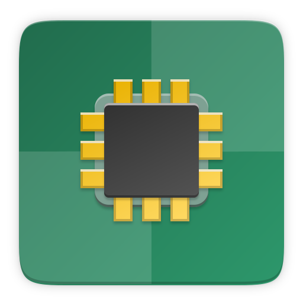

--:--
Ubuntu 26.04
À propos
Rechercher une application
elementary
Calculatr...
Éditeur d...
Fichiers
Firefox
Paramètres
Logiciels
Terminal
Aide Ubuntu

Actualise...
Centre de...
Characters
Clocks
Disk Usag...
Disks
Document ...
Fonts
Image Vie...
Language ...
Logs
Passwords...
Resources
Software ...
Sysprof
Aucune notification
‹
›
Aujourd'hui
Aucun évènement
Ajouter des horloges mondiales…
Choisir un emplacement pour la météo…
100%
Filaire
Mode puissance
Équilibré
Style sombre
Ne pas déranger
Nouveau dossier
Coller
Paramètres d'affichage
Changer le fond d'écran…